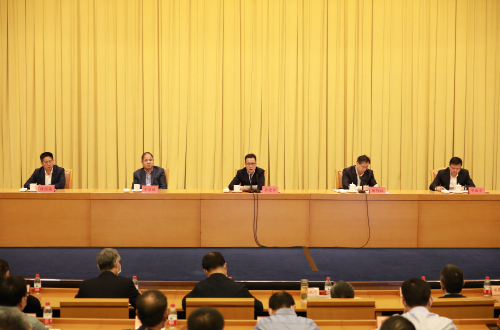
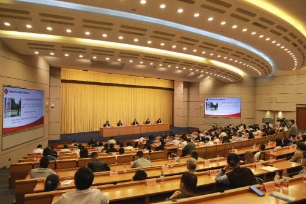

| 索引号： | 00248247X/2022-03159 | 公开方式： | 主动公开 |
|---|---|---|---|
| 文号： | 公开日期: | 2022-05-09 | |
| 发布单位： | 浙江省粮食和物资储备局 | 有效性: |
5月5日上午，省粮食物资局党组在省人民大会堂召开全局干部职工大会。局党组书记潘建漳作讲话，局党组成员、副局长、一级巡视员鲍伟民主持会议。局领导，局机关和直属单位全体干部职工参加会议。省纪委监委驻省发改委纪检监察组吴志刚副组长到会指导。
潘建漳充分肯定了近年来全局全系统干部职工敢于担当、善谋实干、锐意进取，在深化体制机制改革、夯实储备、提升保障能力、应对突发事件、推动高质量发展等方面取得的良好业绩。同时也指出了专项整治、专项巡视等暴露出来的沉疴痼疾，要求提高政治站位，深化思想认识，切实落实各项整改措施，以刮骨疗毒的勇气和决心，进一步提振干事创业精气神，进一步树立担当作为好作风，进一步凝聚推进改革发展的同心力，更好为粮食物资事业聚合力、添动力、增活力。
潘建漳指出，面对“百年未有之大变局”，在新的百年征程上，粮食和物资储备安全的战略地位和基石作用愈加凸显。要高质量完成中央和省委省政府交给的重任，关键在推进干部队伍系统性重塑，加快打造一支高素质的队伍。他明确提出，高素质的队伍必须是“政治为先”的队伍，要将讲政治真正体现在坚决贯彻党中央决策部署的自觉上，真正体现在履职尽责、干好工作的实效上，真正体现在日常言行上，形成全局上下一个方向、一起努力、一个声音的良好政治生态。高素质的队伍必须是“正气为魂”的队伍，要严守政治规矩、政治纪律，切实对他人负责、对单位负责、对自己负责，着力营造一个公平、正义的工作氛围。高素质的队伍必须是“团结为基”的队伍，要大事讲原则，小事讲风格，勇于直率地开展批评与自我批评，真正做到讲团结、会团结，一起营造团结友爱、凝心聚力的好氛围。高素质的队伍必须是“担当为本”的队伍，要有“时时放心不下”的责任感，牢记“有为才有位”的理念，以坐不住、等不起、慢不得的紧迫感，全面“紧起来”、迅速“动起来”，积极投入到粮食物资事业发展各项实践中去，真抓实干、埋头苦干。高素质的队伍必须是“执行为要”的队伍，要实实在在抓部署抓推进，步步为营、闭环管理，突出结果导向，用最终结果检验执行过程，确保党组决策真执行，防止形式主义走过场。高素质的队伍必须是“奋进为上”的队伍，要充分认识到该为、可为、能为的重大使命，要有功成必定有我的担当，在新的百年征程上奋发有为、建功立业，不负时代，不负韶华，不负党和人民的殷切期望。
潘建漳要求，要进一步压实责任，抓紧抓实抓细各项工作任务落实，确保高质量完成全年目标任务。一是要持续推动全面从严治党。各级党组织要切实担负起主体责任，构建党建统领的整体智治格局。要巩固深化党史学习教育，教育引导党员同志学党史、悟思想、办实事、开新局，为党为国守护粮食物资战略资源。要驰而不息推进党风廉政建设和反腐败工作，加快推进管理监督常态化、警示教育长效化、执纪问责强硬化。二是要扎实推进巡视整改和专项整治工作。对前期制定的“四张清单”，要坚决落实主体责任，逐项落实、对账销号、闭环管理，突出建章立制，强化制度执行。要坚持“自查自纠自处”一体推进，做到“边查边改边治”同步发力，构建廉洁、规范、高效长效机制，加快“勤廉粮仓”建设。三是要切实加强干部队伍系统性重塑。要强化领导班子建设，做到心往一处想、劲往一处使、智往一处谋，形成积极向上、干事创业的良好氛围。要坚持正确用人导向，着力推进干部队伍系统性重塑，选好用好不同年龄段的干部，大力培养选拔年轻干部，积极推进轮岗交流。要强化考核监督和结果运用，推动职务职级晋升、选树表彰向想干事、能干事、干成事的单位和个人倾斜。要坚持严管与厚爱相结合，进一步用足用好各项政策，积极办好各类活动，更好提振干部职工精气神，重塑队伍好状态，努力实现“有为者有位、能干者能上、吃苦者吃香、优秀者优先”。四是统筹推进各项中心工作。要按照局党组确定的全年工作思路，坚持一张蓝图绘到底。围绕加快建设“产购储运加销”协同保障体系、加强应急物资储备安全管理、切实提升保障能力等中心工作，推动工作再上一个新台阶。牢固树立“没有走在前列也是一种风险”的意识，在优质粮食工程、社会化储粮等方面跑出加速度，力争贡献更多“浙江经验”。加快数字化改革，抓紧建设推广实战、实用、实效的重大应用，全力打造好粮食物资领域重大改革标志性成果。
潘建漳强调，信心比黄金重要，精神比钻石可贵。处在新的历史阶段，面临新的历史使命，全局上下要团结协作、共同努力，提士气增信心，树正气振精神，以最佳的精神面貌、最优的工作作风、最好的工作成效，勠力同心、砥砺前行，奋力开创粮食物资改革发展新篇章，以优异成绩迎接党的二十大和省第十五次党代会胜利召开。
鲍伟民就贯彻落实会议精神进行部署，他要求全局干部职工，一要深化学习，结合实际谈思想认识，找问题不足，明努力方向，切实把思想和行动统一到局党组的决策部署上来。二要落实整改，针对问题短板和专项巡视、专项整治及专项审计发现的问题，明确政治责任，逐项落实、对账销号、闭环整改，确保尽快让问题清零，让整改落地见效。三要推动工作，牢固树立“没有走在前列也是一种风险”的意识，进一步统一思想认识、进一步聚焦中心工作、进一步增强工作合力，以数字化改革为统领，高质量推进粮食物资事业新发展。